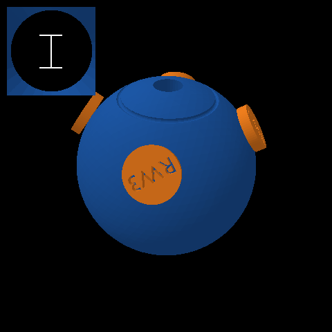
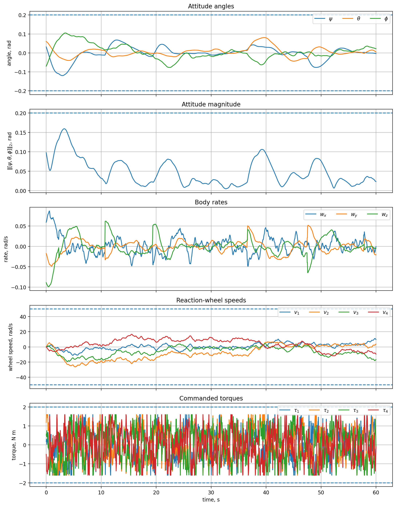
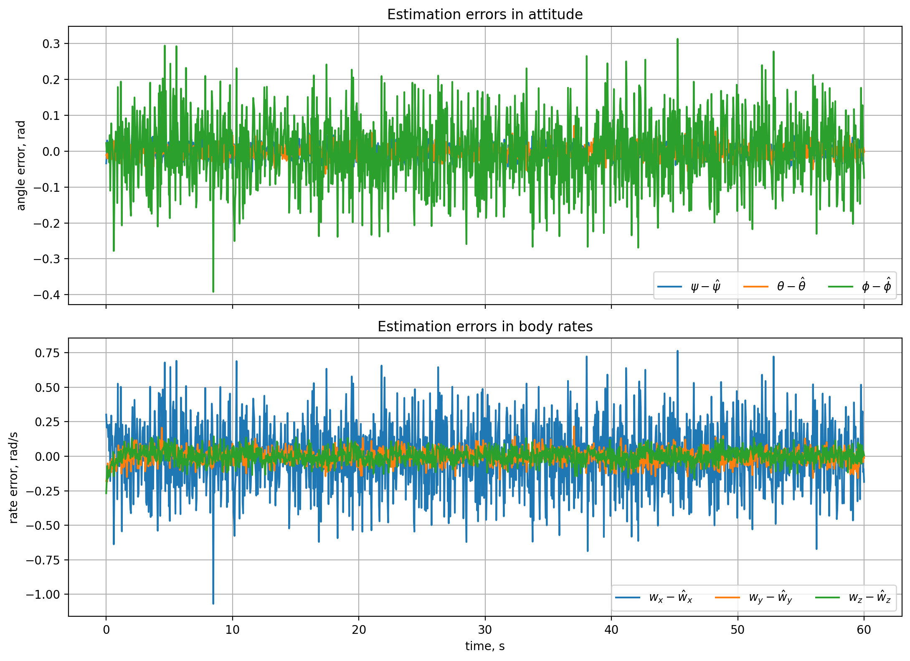
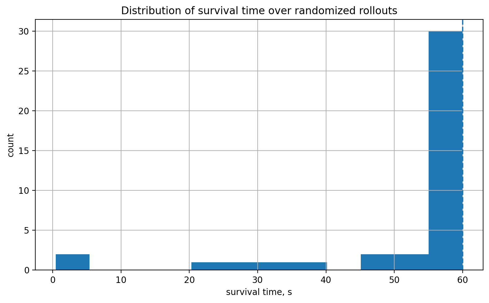
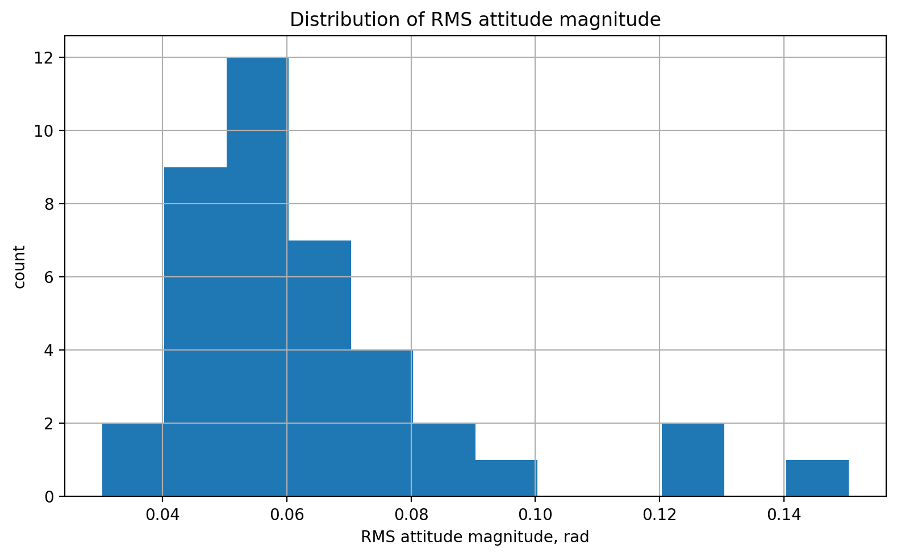
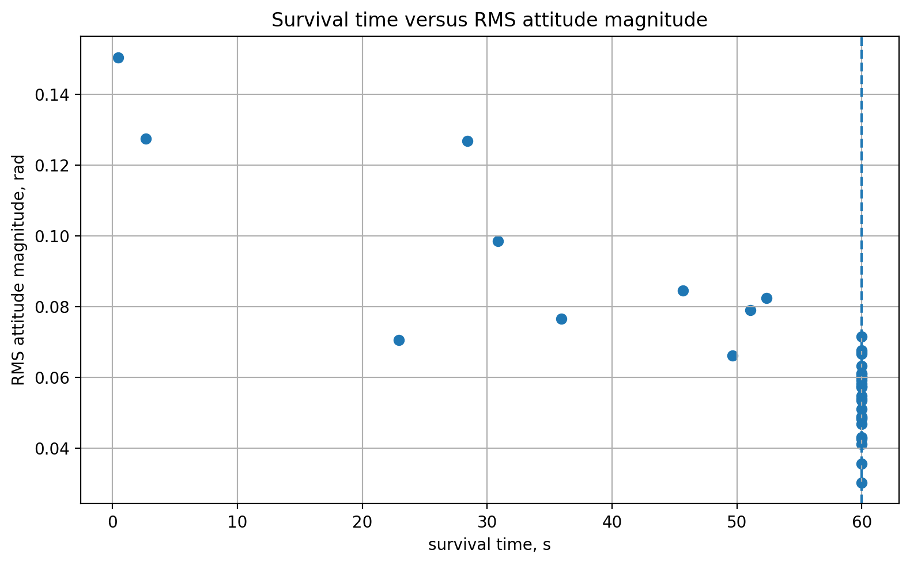
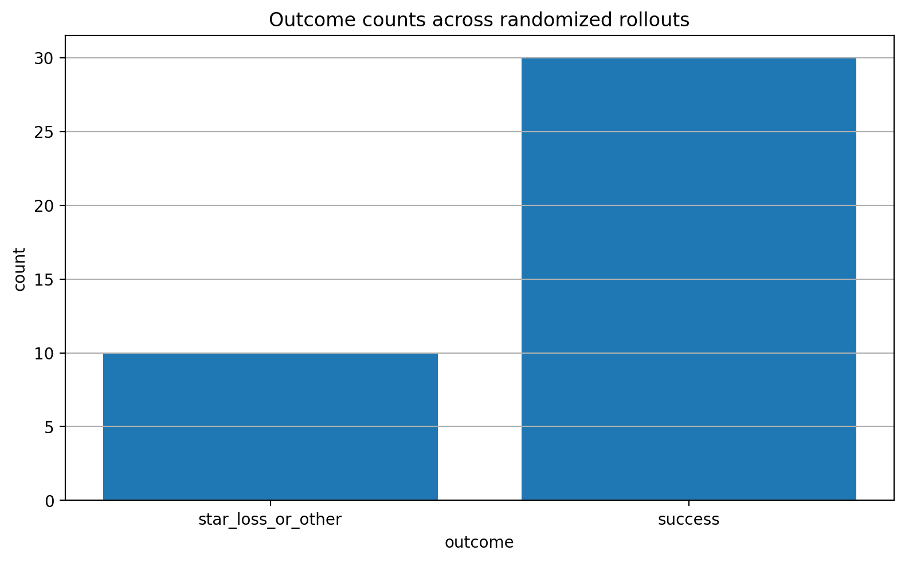

Overview
AE353 Design Project 2 asked for a controller that could hold a simulated spacecraft at a fixed docking attitude for 60 seconds despite noisy star-tracker measurements and impulsive debris disturbances, with the simulator ending the run early if any tracked star left the star-tracker’s field of view or any reaction wheel exceeded its speed limit. The formal requirement was written in “shall” form and tied to a specific verification procedure: with the final controller run over 40 randomized rollouts, at least 28 of them had to reach 60 seconds with all three terminal attitude angles inside ±0.20 rad. The real design question wasn’t just nominal stabilization, since a controller can look great on one clean run and still fail under different noise, disturbances, or initial conditions; it was how to arrange the wheels and stars for balanced authority and margin, and how to keep a stabilizing linear controller reliable once the observer is noisy and the wheels are close to saturating.
What I did
I placed the four reaction-wheel axes symmetrically around the body and chose four tracked stars arranged symmetrically about the boresight, near the center of the field of view, to leave margin for attitude excursions before a star could leave the frame. With four wheels controlling three body-torque axes, this geometry also leaves a one-dimensional null space I could use later for momentum management without disturbing the commanded torque. I linearized the nonlinear spacecraft dynamics about the zero-attitude, zero-rate equilibrium to get a six-state model in yaw, pitch, roll, and their body rates, and confirmed the linearized system was fully controllable before designing anything on top of it.

For stabilization I designed a continuous-time LQR gain in body-torque coordinates, weighting attitude error the most heavily, body-rate damping second, and actuator effort third; that priority order came out of iterating on the design and watching where the closed loop actually struggled. Solving the algebraic Riccati equation gave a body-torque feedback gain that I then had to convert into four wheel-torque commands through the wheel-axis geometry matrix. A plain least-squares allocation of that conversion stabilized the nominal model but, under noisy rollouts, drove unnecessary wheel activity and let one wheel pair drift rapidly toward saturation.
I fixed that with a few practical additions layered on top of the base LQR law. The allocator became a weighted least-squares solve that penalizes wheels whose estimated speed is already high, discouraging the controller from continuing to load up a fast wheel. A second term, computed in the allocator’s null space, slowly bleeds off stored wheel momentum without changing the commanded body torque at all. I smoothed the resulting command with a simple exponential filter to cut down on noise-driven chatter, and added a soft-braking rule that scales the command down as any wheel’s estimated speed approaches its limit, well before the hard saturation bound, so the controller backs off gracefully instead of slamming into the limit. Together these turned a controller that was stable in theory into one that behaved well under real, noisy, disturbed simulation.
On one representative 60-second rollout, all three attitude angles stayed comfortably inside the ±0.20 rad requirement bound the whole time, settling into a range of roughly 0.02 to 0.10 rad after the initial transient, with body rates generally within about ±0.08 rad/s. Wheel speeds stayed well clear of the ±50 rad/s limit, peaking below 30 rad/s, and the commanded torques stayed active throughout without ever showing sustained saturation. This run alone doesn’t prove the design works, but it does show the closed-loop behavior is physically reasonable in the full nonlinear simulator, not just on paper.

The observer’s estimation errors for the same run show where the noise actually lives: the roll-angle estimate was the noisiest of the three attitude channels, and the body-rate estimate about the x-axis was visibly noisier than the other two rate channels. That’s part of why command smoothing and the soft-braking margin mattered: the raw noisy estimate was usable for feedback, but not clean enough to command straight through to the wheels without some filtering.

To check reliability rather than just one good run, I evaluated the final controller over 40 randomized rollouts with star-tracker noise and debris disturbances enabled. Thirty of the forty reached the full 60-second interval within the terminal-attitude bound, a 75% success rate against the 70% (28-of-40) requirement, with a mean survival time of 53.00 s and a mean RMS attitude magnitude of 0.0645 rad across the batch.


Plotting survival time against RMS attitude magnitude makes the failure mechanism clear: runs with low RMS attitude generally survive the full interval, while the early failures cluster at higher RMS values, meaning the spacecraft was tumbling too much before it ran out of field of view. Breaking outcomes down by category confirmed why: every one of the ten non-successes fell into star loss or a closely related early termination, and not a single rollout failed by exceeding the wheel-speed limit. The weighted allocation and soft braking were doing their job on the actuator side; the remaining weak point was keeping stars centered under large, randomized disturbances.


Looking at the attitude-magnitude envelope across every successful run shows how consistent the controller was once past the initial transient: the 10th-to-90th-percentile band narrows quickly, and the median settles around 0.03 to 0.05 rad for most of the docking interval, comfortably below the 0.20 rad requirement.
The overall lesson was that small-signal stability was never the hard part; an LQR gain stabilizes the linearized model easily. The real work, and the real source of remaining failures, was in the practical details: sensor geometry, noise-aware wheel allocation, momentum management, and saturation handling in the full nonlinear simulator.
Tools & methods
Computed the linearization, controllability check, and continuous-time Riccati solve for the LQR gain in Python with NumPy and SciPy, then implemented the wheel-torque allocator, null-space momentum draining, command smoothing, and soft-braking logic on top of the course-provided star-tracker observer and spacecraft simulator. Used Matplotlib for every time history, histogram, scatter plot, and envelope plot, and recorded a full 60-second docking run as a simulation video.
Outcome
Ended up with a controller that satisfied the formal reliability requirement: 30 of 40 randomized rollouts succeeded (75%), against a 28-of-40 (70%) threshold, with a mean survival time of 53.00 s and mean RMS attitude magnitude of 0.0645 rad across the batch. The representative run held RMS attitude error to 0.0587 rad with a maximum wheel speed of 26.40 rad/s, and every one of the ten non-successes in the aggregate batch was a star-loss event rather than a wheel-speed-limit failure, pointing clearly at where the remaining design margin is spent.